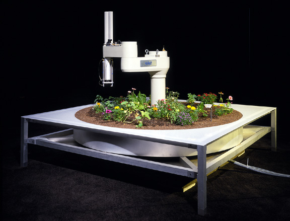
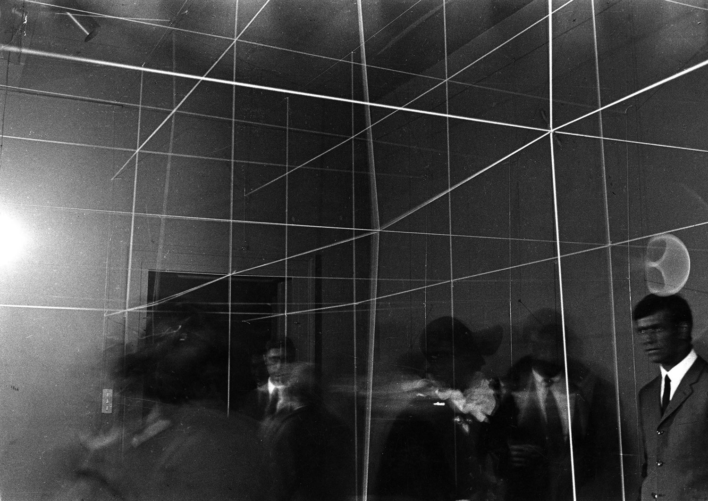
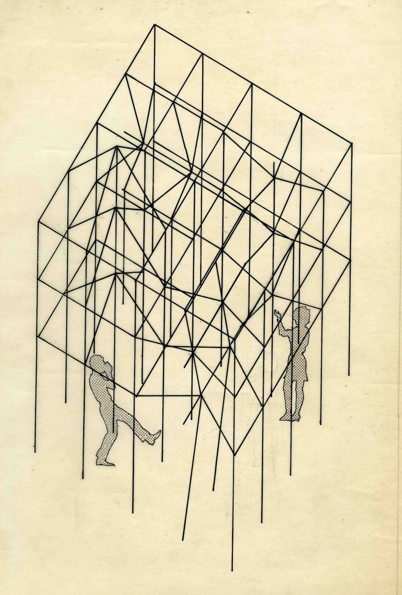
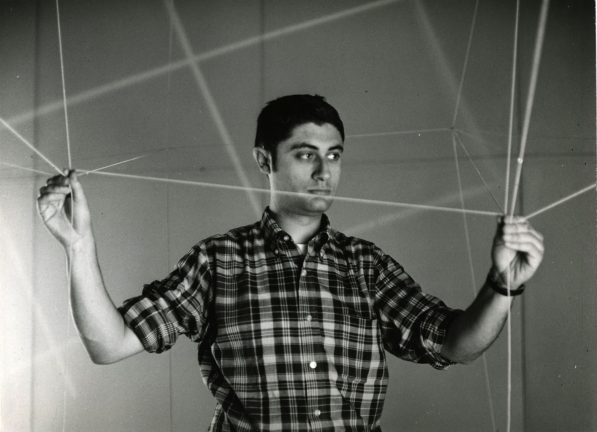
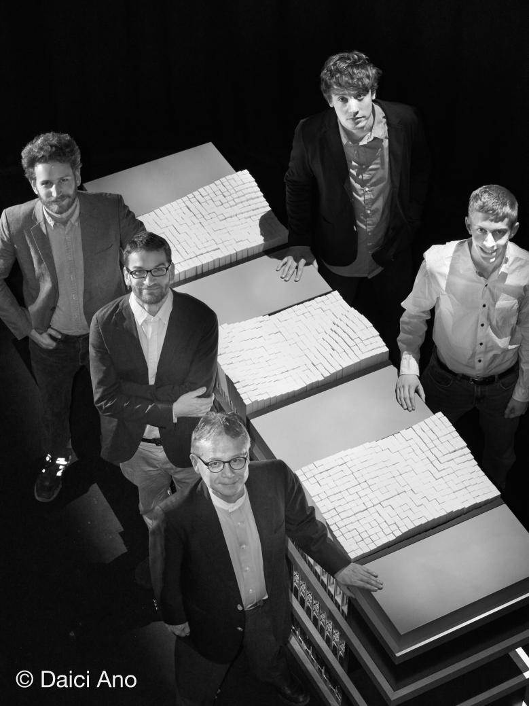
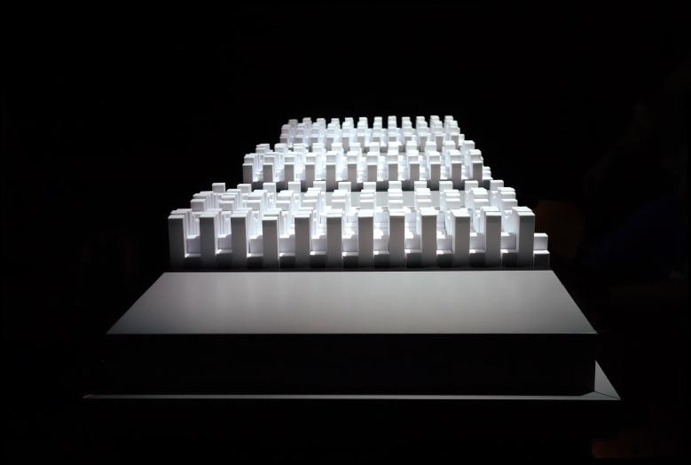
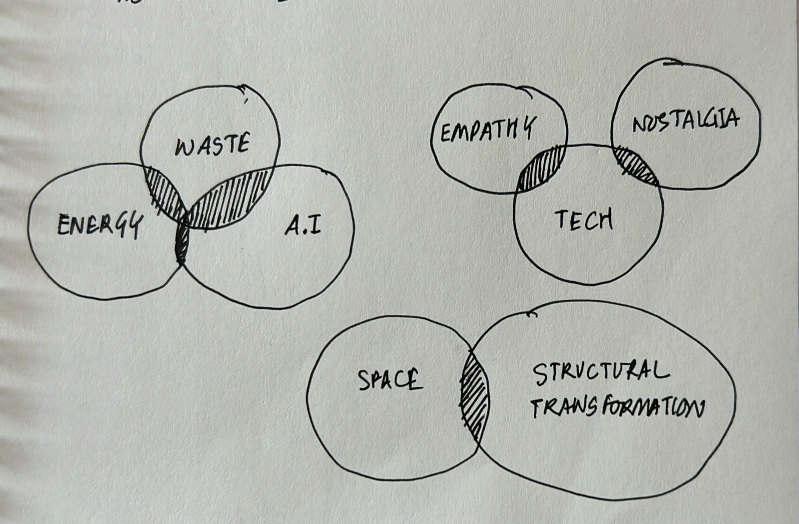
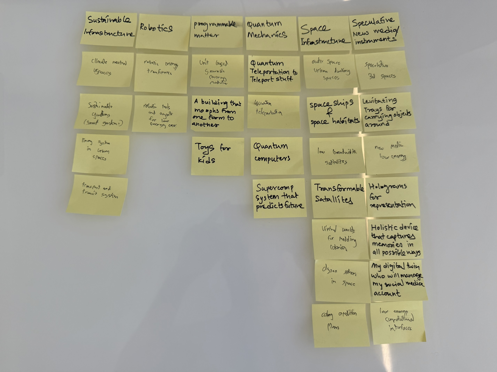

Jose Sanchez
- Thomas Knoepffler, M.S. DT 2026
- Rajvi Ranjit Patil, M.S. DT 2026
- Cheng Peng, M.S. DT 2026
One of the most famous thought experiments in all of philosophy originates from René Descartes' Cogito, ergo sum: “I think, therefore I am.” In his seminal work, Discourse on the Method, Descartes recounts how he sought to gain an original thought by adopting radical skepticism. He describes locking himself in his chambers and contemplatively divorcing himself from the world, trying to connect to a higher truth through logical reasoning and cognition alone. We are left in a space that is empty and black, and yet it is embodied in presence by the philosopher himself. Perhaps the next glaring philosophical insight that Descartes should have stated after “I think, therefore I am” should have been, “I am, therefore I exist...here.”
The idea of being able to adapt and change the space to reflect both our mental models and our core motivations has been a persistent notion in the history of innovation, architecture, and of course, our own imagination. Sigmund Freud once famously compared the function of the mind to that of a city in his book Civilization and Its Discontents, describing how civilized minds are designed to sublimate base desires and mediate behaviors towards productivity, the same way cities and governments design infrastructures for the same purpose. Within the realm of art and fiction, the holodeck in Star Trek allows for individuals to create simulations of life-like scenarios in a controlled panel room on the Starship Enterprise. New mediated and interactive experiences have also had a role in tapping into this concept, namely the idea of the open-world sandbox genre, where players can shape and craft the world around them (e.g. Minecraft, The Sims).
This idea became very popular during the 1990s and early 2000s, during the rise the dot-com bubble. A large techno-positivist culture, combined with a healthy dose of free-market capitalism, allowed for speculative thinking about the prospect of new technology to include various modalities of interface beyond just the command-line terminal. The introduction of graphical user interfaces (GUIs) and continued developments of ergonomic and human-factor-based interfacing tools (e.g. keyboards mice) gave way to radical speculation about the future of a more physical-based Internet, what individuals dubbed cyberspace.ever, unlike real space, cyberspace had various other promises embedded into its paradigm, namely, and most importantly, the disembodiment of ourselves. This promise is described in N. Katherine Hayles's famous historical account and criticism of the history of disembodiment in How We Became Posthuman, where she argues that this worldview was a direct result from the ideas and frameworks that arose from the first and second wave of cybernetics.
The cybernetic promise of mapping out all interactions and phenomena in the form of systems and feedback loops ultimately came to a sobering realization: embodiment is a fundamental facet of interaction. Without bodies, there are no buildings, so to speak, and yet we continue to live in this fallen world where virtuality has won and allowed for a new stage of technological media development to ensue. Now, immersion is replaced with habituation, and these systems and digital interfaces follow us (i.e. through surveillance) into our daily lives. These ultimately are the nonhuman objects that imbue us with ideology, taking away from our agency.
But what if we could resurrect the notion of digital architecture inhabiting real space? It is true that the notion of cyberspace is an illusion in and of itself, as fiber-optic networks and warehouse server facilities do truly exist in physicality. However, the immersive element of human interaction as a primary impetus for change seems to have disappeared from our popular consciousness and our demands as information technology (IT) consumers. Could re-establishing this correspondence help alleviate the fatigue that has underpinned our contemporary relationship with IT as a whole (e.g. social media, messaging)? Existential philosopher R.D. Laing once suggested in his book, the Divided Self, that a disembodiment of self can lead to a divorce from the world around us and the sensations that are generated from within. Would a return to physicality, with an emphasis on materiality and with the help of programmable matter, bring us out from our own chambers and into the light?
The goal of our project is to envision a new kind of interface that directly links digital, real-time feedback to physical, spatial responsiveness. How might we make a generative cyber-physical system for the IT consumer market to create a correspondence between our digital ecologies and our physical realities?






To create a correspondence between our physical realities and our virtual ecologies. To create telepresent cybernetic systems that sustain closed world architectures.

